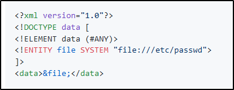

XXE Attack and Defense
DISCLAIMER:
I will show only a teoric way to attack with XXE, because should not be done
on other systems like Docker an Heroku !!!
If we use a XML file like this written in,
we ca get info about the system.

At this step, we should be authenticated (Phase 2) and see what we can do on the Web Application:
You can do that with a "Scan" feature from Burp Suite
If we find something that allow us to upload (E.G. User section),
we can go for a XXE!!


We can see what a response with XXE Vulnerability should look like:
We should see the response as the /etc/shadow file!!